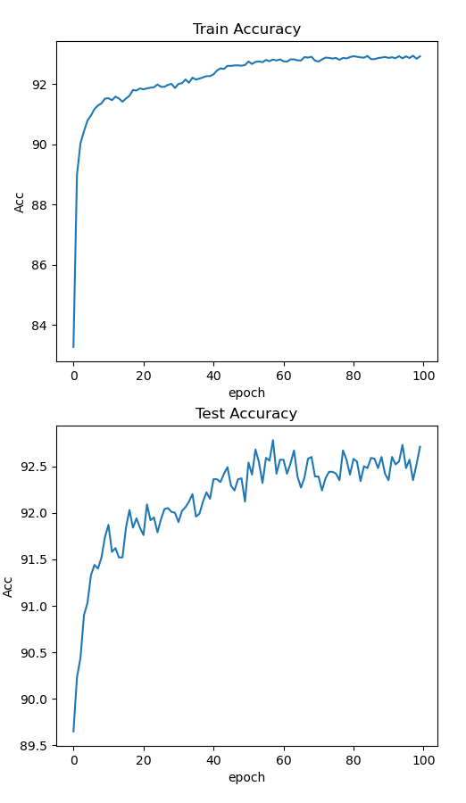

Welcome to SPAIC’s documentation!¶
SPAIC is a brain-inspired computing framework for combining neuroscience with machine learning.
I. How to install¶
Install the latest version from source code:
From GitHub:
git clone https://github.com/ZhejianglabNCRC/SPAIC.git
cd SPAIC
python setup.py install
II. How to build a spiking neural network¶
In order to facilitate users to understand how to use SPAIC to carry out their own research work, we will use STCA learning algorithm 1 to train the network to recognize MNIST data set as an example to build a SNN training network.
1. Construct a network class¶
The network is the most important part of SPAIC, like the framework of the whole neural network, so we need to build a network class first, and then fill this network with other elements, such as neurons and connections. Inherit spaic.Network To recreate and instantiate a network class:
class SampleNet(spaic.Network):
def __init__(self):
super(SampleNet, self).__init__()
……
Net = SampleNet()
2. Add Network Components¶
When building the framework of Network, we need to add neurons and connect these components in it, so that the Network will not be an empty framework. The components that can be added include the input and output parts: Node; the neurongroup NeuronGroups; the synapse connection connection; the monitor monitors ;the learning algorithm: learners. Also, we can add some special components when building some large and complex networks, Assembly and Projection , which used to let the complex structures more clearly.
2.1 Create Node and Neurongroups¶
For a network that uses STCA algorithm and recognize MNIST dataset, the node we need is a Node.Encoder layer as input to encode the input data, a clif NeuronGroup layer for training and a Node.Decoder layer as output to decode the output data. So, what we need to do is add:
self.input = spaic.Encoder(num=784, coding_method='poisson')
self.layer1 = spaic.NeuronGroup(neuron_num=10, neuron_model='clif')
self.output = spaic.Decoder(num=10, dec_target=self.layer1)
注解
To be mentioned, the number of the neuron in output need to be same as the target layer of dec_target .
2.2 Construct connections¶
In this example, since the network structure is fairly simple, all that is required is a simple full connection connecting the input layer to the training layer.
self.connection1 = spaic.Connection(self.input, self.layer1, link_type='full')
2.3 Add learning algorithm and optimization algorithm¶
In this example, we use STCA algorithm 1, it is a BPTT algorithm that use surrogate gradient strategy. And we choose Adam as our optimizer and set
self.learner = spaic.Learner(trainable=self, algorithm='STCA')
self.learner.set_optimizer('Adam', 0.001)
2.4 Add monitor¶
In this example, although it is not necessary to add a monitor, we can monitor the voltage and spike output of layer1 for teaching purposes, i.e.
self.mon_V = spaic.StateMonitor(self.layer1, 'V')
self.mon_O = spaic.StateMonitor(self.layer1, 'O')
2.5 Add backend¶
Backend is an extremely important part of SPAIC, responsible for the actual simulation of the back-end network. backend.dt is used to set the time step for network simulation, which needs to be set in advance before establishing the network. The selection of different backends and devices also needs to be set up before building the network. In this example, we use pytorch as the backend simulator and build the network with cuda. Use 0.1ms as the time step
if torch.cuda.is_available():
device = 'cuda'
else:
device = 'cpu'
backend = spaic.Torch_Backend(device)
backend.dt = 0.1
self.set_backend(backend)
2.6 Overall network structure¶
import spaic
import torch
class TestNet(spaic.Network):
def __init__(self):
super(TestNet, self).__init__()
# coding
self.input = spaic.Encoder(num=784, coding_method='poisson')
# neuron group
self.layer1 = spaic.NeuronGroup(10, neuron_model='clif')
# decoding
self.output = spaic.Decoder(num=10, dec_target=self.layer1, coding_method='spike_counts')
# Connection
self.connection1 = spaic.Connection(self.input, self.layer1, link_type='full')
# Minitor
self.mon_V = spaic.StateMonitor(self.layer1, 'V')
self.mon_O = spaic.StateMonitor(self.layer1, 'O')
# Learner
self.learner = spaic.Learner(trainable=self, algorithm='STCA')
self.learner.set_optimizer('Adam', 0.001)
if torch.cuda.is_available():
device = 'cuda'
else:
device = 'cpu'
backend = spaic.Torch_Backend(device)
backend.dt = 0.1
self.set_backend(backend)
# Network instantiation
Net = TestNet()
3. Start training¶
3.1 Load the dataset¶
from tqdm import tqdm
import torch.nn.functional as F
from spaic.IO.Dataset import MNIST as dataset
# Create the training data set
root = './spaic/Datasets/MNIST'
train_set = dataset(root, is_train=True)
test_set = dataset(root, is_train=False)
# Set the run time and batch size
run_time = 50
bat_size = 100
# Create the DataLoader iterator
train_loader = spaic.Dataloader(train_set, batch_size=bat_size, shuffle=True, drop_last=False)
test_loader = spaic.Dataloader(test_set, batch_size=bat_size, shuffle=False)
3.2 Run the network¶
eval_losses = []
eval_acces = []
losses = []
acces = []
num_correct = 0
num_sample = 0
for epoch in range(100):
# Train
print("Start training")
train_loss = 0
train_acc = 0
pbar = tqdm(total=len(train_loader))
for i, item in enumerate(train_loader):
# forward propagation
data, label = item
Net.input(data)
Net.output(label)
Net.run(run_time)
output = Net.output.predict
output = (output - torch.mean(output).detach()) / (torch.std(output).detach() + 0.1)
label = torch.tensor(label, device=device)
batch_loss = F.cross_entropy(output, label)
# Back propagation
Net.learner.optim_zero_grad()
batch_loss.backward(retain_graph=False)
Net.learner.optim_step()
# Record the error
train_loss += batch_loss.item()
predict_labels = torch.argmax(output, 1)
num_correct = (predict_labels == label).sum().item() # Record the number of correct tags
acc = num_correct / data.shape[0]
train_acc += acc
pbar.set_description_str("[loss:%f]Batch progress: " % batch_loss.item())
pbar.update()
pbar.close()
losses.append(train_loss / len(train_loader))
acces.append(train_acc / len(train_loader))
print('epoch:{},Train Loss:{:.4f},Train Acc:{:.4f}'.format(epoch, train_loss / len(train_loader), train_acc / len(train_loader)))
# Test
eval_loss = 0
eval_acc = 0
print("Start testing")
pbarTest = tqdm(total=len(test_loader))
with torch.no_grad():
for i, item in enumerate(test_loader):
data, label = item
Net.input(data)
Net.run(run_time)
output = Net.output.predict
output = (output - torch.mean(output).detach()) / (torch.std(output).detach() + 0.1)
label = torch.tensor(label, device=device)
batch_loss = F.cross_entropy(output, label)
eval_loss += batch_loss.item()
_, pred = output.max(1)
num_correct = (pred == label).sum().item()
acc = num_correct / data.shape[0]
eval_acc += acc
pbarTest.set_description_str("[loss:%f]Batch progress: " % batch_loss.item())
pbarTest.update()
eval_losses.append(eval_loss / len(test_loader))
eval_acces.append(eval_acc / len(test_loader))
pbarTest.close()
print('epoch:{},Test Loss:{:.4f},Test Acc:{:.4f}'.format(epoch,eval_loss / len(test_loader), eval_acc / len(test_loader)))
4. Training results¶
After training and testing 100 Epochs, we get the following accuracy curve through matplotlib
{kind=link}
5. Save model¶
After the training is completed, we can store the weight information through the built-in function Network.save_state, or use spaic.Network_saver.network_save to store the overall network structure and weight.
Method 1: (only store weights)
save_file = Net.save_state("TestNetwork")
Method 2: (store network structure and weights at the same time)
save_file = network_save(Net, "TestNetwork", save_format='json')
注解
In mode 2, the format of the network structure storage can be json or yaml, both of which can be read directly without trThe weights of the first and second methods are stored in the tensor format of Pytorch recently.
Additional: Other ways of constructing networks¶
1. the form using ‘with’¶
# Initializes an object of the base network class
Net = spaic.Network()
# The network structure is established by defining network units in with
with Net:
# Create an input node and select the input encoding form
input1 = spaic.Encoder(784, encoding='poisson')
# Establish the neuron cluster, select the neuron type, and set the neuron
# parameters such as discharge threshold and membrane voltage time constant
layer1 = spaic.NeuronGroup(10, neuron_model='clif')
# Establish connections between nerve clusters
connection1 = spaic.Connection(input1, layer1, link_type='full')
# Set up the output node and select the output decoding form
output = spaic.Decoder(num=10, dec_target=self.layer1,
coding_method='spike_counts')
# establish state detector, it can monitor the state of neurons, input and
# output nodes, connections and other units
monitor1 = spaic.StateMonitor(layer1, 'V')
# Add the learning algorithm and select the network structure to be trained,
# (self stands for the whole ExampleNet structures)
learner = spaic.Learner(trainable=self, algorithm='STCA')
# Add optimization algorithm
learner.set_optimizer('Adam', 0.001)
2. Import and modify the base model to construct a network model¶
from spaic.Library import ExampleNet
Net = ExampleNet()
# Neuron parameter
neuron_param = {
'tau_m': 8.0,
'V_th': 1.5,
}
# Creating new neuron clusters
layer3 = spaic.NeuronGroup(100, neuron_model='lif', param=neuron_param)
layer4 = spaic.NeuronGroup(100, neuron_model='lif', param=neuron_param)
# Add new set members to a neural set
Net.add_assembly('layer3', layer3)
# Delete an existing set member from the neural set
Net.del_assembly(Net.layer3)
# Copy an existing Assembly structure and add the new assembly to the neural set
Net.copy_assembly('net_layer', ExampleNet())
# Replace an existing neural set within the set with a new neural set
Net.replace_assembly(Net.layer1, layer3)
# Combine this neural with another neural set to obtain a new neural set
Net2 = ExampleNet()
Net.merge_assembly(Net2)
# Connect two nerve clusters within a nerve set
con = spaic.Connection(Net.layer2, Net.net_layer, link_type='full')
Net.add_connection('con3', con)
# Take out some members of this nerve set and the connections between them
# to form a new nerve set, and the original nerve set remains unchanged
Net3 = Net.select_assembly([Net.layer2, net_layer])
User manual:¶
欢迎来到SPAIC的文档网站!¶
SPAIC 是一个用于结合神经科学与机器学习的类脑计算框架。
I. 如何安装¶
通过源代码安装最新版本：
通过GitHub：
git clone https://github.com/ZhejianglabNCRC/SPAIC.git
cd SPAIC
python setup.py install
II. 如何从零开始构建一个脉冲神经网络¶
为了便于用户了解该如何使用SPAIC开展自己的研究工作，我们将以使用STCA学习算法 1 训练识别MNIST数据集的网络作为例子，搭建一个SNN训练网络。
1. 建立一个网络¶
网络是SPAIC中最为重要的组成部分，如同整个神经网络的框架部分，所以我们需要首先先建立一个网络，再在这个网络中填充其他的元素，例如神经元和连接。继承 spaic.Network 来重新建立一个网络类并实例化：
class SampleNet(spaic.Network):
def __init__(self):
super(SampleNet, self).__init__()
……
Net = SampleNet()
2. 添加网络组件¶
在搭建 Network 这个框架时，我们需要在其内部添加神经元和连接这些组件，从而使得这个网络并不是单纯的一张白纸，能够添加的组件包括了输入输出部分的 Node 、神经元组的 NeuronGroups、突触连接 connections 、监视器 monitors 、学习算法 learners。或者，我们在构建大型复杂网络时可以添加一些特殊的部件, Assembly 以及 Projection，用于将复杂的结构更加清晰地分层构建。
2.1 创建并添加节点层与神经元组¶
对于一个使用STCA训练识别MNIST数据集的网络而言，我们需要的节点分别是一个input层用于编码并输入数据，一个 clif 神经元层用于训练以及一个输出层用于解码脉冲输出。所以我们所添加的就是：
self.input = spaic.Encoder(num=784, coding_method='poisson')
self.layer1 = spaic.NeuronGroup(neuron_num=10, neuron_model='clif')
self.output = spaic.Decoder(num=10, dec_target=self.layer1)
注解
这里较为需要注意的是，output 层的数量需要与其 dec_target 目标层的神经元数量一致。
2.2 建立连接¶
在本示例中，因为网络结构相当简单，所以需要的连接只是一个简单的全连接将输入层与训练层连接到一起。
self.connection1 = spaic.Connection(self.input, self.layer1, link_type='full')
2.3 添加学习算法与优化算法¶
在本示例中，我们采用了STCA学习算法，STCA学习算法 1 是一种采用了替代梯度策略的BPTT类算法。在优化器上选择 Adam 算法并设置
self.learner = spaic.Learner(trainable=self, algorithm='STCA')
self.learner.set_optimizer('Adam', 0.001)
2.4 添加监视器¶
在本示例中，虽然没有添加监视器的必要，但是作为教学，我们可以对 layer1 的电压与脉冲输出进行监控，即：
self.mon_V = spaic.StateMonitor(self.layer1, 'V')
self.mon_O = spaic.StateMonitor(self.layer1, 'O')
2.5 添加backend¶
Backend是SPAIC中极为重要的一个部分，负责后端的网络实际模拟。 backend.dt 用于设置网络模拟时的时间步长，需要在建立网络前提前进行设定。不同后端以及设备的选择也需要在搭建网络前设置完成。在本示例，我们采用pytorch作为后端，将网络构建与cuda上，以 0.1ms 作为时间步长：
if torch.cuda.is_available():
device = 'cuda'
else:
device = 'cpu'
backend = spaic.Torch_Backend(device)
backend.dt = 0.1
self.set_backend(backend)
2.6 整体网络结构¶
import spaic
import torch
class TestNet(spaic.Network):
def __init__(self):
super(TestNet, self).__init__()
# coding
self.input = spaic.Encoder(num=784, coding_method='poisson')
# neuron group
self.layer1 = spaic.NeuronGroup(10, neuron_model='clif')
# decoding
self.output = spaic.Decoder(num=10, dec_target=self.layer1, coding_method='spike_counts')
# Connection
self.connection1 = spaic.Connection(self.input, self.layer1, link_type='full')
# Minitor
self.mon_V = spaic.StateMonitor(self.layer1, 'V')
self.mon_O = spaic.StateMonitor(self.layer1, 'O')
# Learner
self.learner = spaic.Learner(trainable=self, algorithm='STCA')
self.learner.set_optimizer('Adam', 0.001)
if torch.cuda.is_available():
device = 'cuda'
else:
device = 'cpu'
backend = spaic.Torch_Backend(device)
backend.dt = 0.1
self.set_backend(backend)
# 网络实例化
Net = TestNet()
3. 开始训练¶
3.1 加载数据集¶
from tqdm import tqdm
import torch.nn.functional as F
from spaic.IO.Dataset import MNIST as dataset
# 创建训练数据集
root = './spaic/Datasets/MNIST'
train_set = dataset(root, is_train=True)
test_set = dataset(root, is_train=False)
# 设置运行时间与批处理规模
run_time = 50
bat_size = 100
# 创建DataLoader迭代器
train_loader = spaic.Dataloader(train_set, batch_size=bat_size, shuffle=True, drop_last=False)
test_loader = spaic.Dataloader(test_set, batch_size=bat_size, shuffle=False)
3.2 运行网络¶
eval_losses = []
eval_acces = []
losses = []
acces = []
num_correct = 0
num_sample = 0
for epoch in range(100):
# 训练阶段
print("Start training")
train_loss = 0
train_acc = 0
pbar = tqdm(total=len(train_loader))
for i, item in enumerate(train_loader):
# 前向传播
data, label = item
Net.input(data)
Net.output(label)
Net.run(run_time)
output = Net.output.predict
output = (output - torch.mean(output).detach()) / (torch.std(output).detach() + 0.1)
label = torch.tensor(label, device=device)
batch_loss = F.cross_entropy(output, label)
# 反向传播
Net.learner.optim_zero_grad()
batch_loss.backward(retain_graph=False)
Net.learner.optim_step()
# 记录误差
train_loss += batch_loss.item()
predict_labels = torch.argmax(output, 1)
num_correct = (predict_labels == label).sum().item() # 记录标签正确的个数
acc = num_correct / data.shape[0]
train_acc += acc
pbar.set_description_str("[loss:%f]Batch progress: " % batch_loss.item())
pbar.update()
pbar.close()
losses.append(train_loss / len(train_loader))
acces.append(train_acc / len(train_loader))
print('epoch:{},Train Loss:{:.4f},Train Acc:{:.4f}'.format(epoch, train_loss / len(train_loader), train_acc / len(train_loader)))
# 测试阶段
eval_loss = 0
eval_acc = 0
print("Start testing")
pbarTest = tqdm(total=len(test_loader))
with torch.no_grad():
for i, item in enumerate(test_loader):
data, label = item
Net.input(data)
Net.run(run_time)
output = Net.output.predict
output = (output - torch.mean(output).detach()) / (torch.std(output).detach() + 0.1)
label = torch.tensor(label, device=device)
batch_loss = F.cross_entropy(output, label)
eval_loss += batch_loss.item()
_, pred = output.max(1)
num_correct = (pred == label).sum().item()
acc = num_correct / data.shape[0]
eval_acc += acc
pbarTest.set_description_str("[loss:%f]Batch progress: " % batch_loss.item())
pbarTest.update()
eval_losses.append(eval_loss / len(test_loader))
eval_acces.append(eval_acc / len(test_loader))
pbarTest.close()
print('epoch:{},Test Loss:{:.4f},Test Acc:{:.4f}'.format(epoch,eval_loss / len(test_loader), eval_acc / len(test_loader)))
5. 保存网络¶
在训练完成之后，我们可以通过 Network 内置的 save_state 函数将权重信息存储下来，也可以通过 spaic.Network_saver.network_save 函数将整体网络的结构以及权重一同存储下来。
方式一：（只存储权重）
save_file = Net.save_state("TestNetwork")
方式二：（同时存储网络结构以及权重）
save_file = network_save(Net, "TestNetwork", save_format='json')
注解
在方式二中，网络结构存储的格式可以为 json 亦或是 yaml 格式，这两种格式都是可以直接阅读不需要转译的。而方式一与方式二这两种方式的权重都以Pytorch的tensor格式存储。
附：网络的其他构建方式¶
1. with形式¶
# 初始化基本网络类的对象
Net = spaic.Network()
# 通过把网络单元在with内定义，建立网络结构
with Net:
# 建立输入节点并选择输入编码形式
input1 = spaic.Encoder(784, encoding='poisson')
# 建立神经元集群，选择神经元类型，并可以设置 放电阈值、膜电压时间常数等神经元参数值
layer1 = spaic.NeuronGroup(10, neuron_model='clif')
# 建立神经集群间的连接
connection1 = spaic.Connection(input1, layer1, link_type='full')
# 建立输出节点，并选择输出解码形式
output = spaic.Decoder(num=10, dec_target=self.layer1, coding_method='spike_counts')
# 建立状态检测器，可以Monitor神经元、输入输出节点、连接等多种单元的状态量
monitor1 = spaic.StateMonitor(layer1, 'V')
# 加入学习算法，并选择需要训练的网络结构，（self代表全体ExampleNet结构）
learner = spaic.Learner(trainable=self, algorithm='STCA')
# 加入优化算法
learner.set_optimizer('Adam', 0.001)
2. 通过引入模型库模型并进行修改的方式构建网络¶
from spaic.Library import ExampleNet
Net = ExampleNet()
# 神经元参数
neuron_param = {
'tau_m': 8.0,
'V_th': 1.5,
}
# 新建神经元集群
layer3 = spaic.NeuronGroup(100, neuron_model='lif', param=neuron_param)
layer4 = spaic.NeuronGroup(100, neuron_model='lif', param=neuron_param)
# 向神经集合中加入新的集合成员
Net.add_assembly('layer3', layer3)
# 删除神经集合中已经存在集合成员
Net.del_assembly(Net.layer3)
# 复制一个已有的assembly结构，并将新建的assembly加入到此神经集合
Net.copy_assembly('net_layer', ExampleNet())
# 将集合内部已有的一个神经集合替换为一个新的神经集合
Net.replace_assembly(Net.layer1, layer3)
# 将此神经集合与另一个神经集合进行合并，得到一个新的神经集合
Net2 = ExampleNet()
Net.merge_assembly(Net2)
#连接神经集合内部两个神经集群
con = spaic.Connection(Net.layer2, Net.net_layer, link_type='full')
Net.add_connection('con3', con)
#将此神经集合中的部分集合成员以及它们间的连接取出来组成一个新的神经集合，原神经集合保持不变
Net3 = Net.select_assembly([Net.layer2, net_layer])
文档索引¶
- 1(1,2,3,4)
Pengjie Gu et al. “STCA: Spatio-Temporal Credit Assignment with Delayed Feedback in Deep SpikingNeural Networks.” In:Proceedings of the Twenty-Eighth International Joint Conference on Artificial Intelligence, IJCAI-19. International Joint Conferences on Artificial Intelligence Organization, July 2019,pp. 1366–1372. doi:10.24963/ijcai.2019/189.